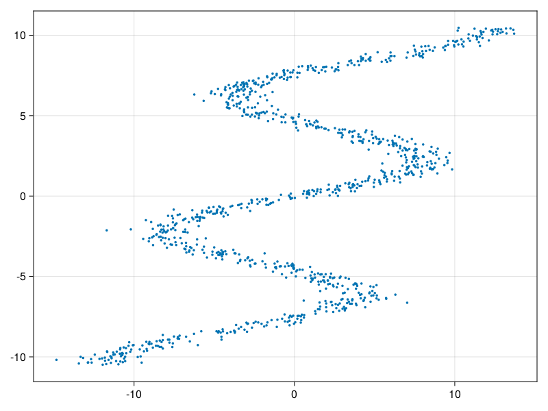

MixtureDensityNetworks
Documentation for MixtureDensityNetworks.
Index
MixtureDensityNetworks.MDNMixtureDensityNetworks.MDNMixtureDensityNetworks.fit!MixtureDensityNetworks.likelihood_lossMixtureDensityNetworks.predict
API
MixtureDensityNetworks.MDN — TypeStruct for storing the hyperparameters of the MDN model.
MixtureDensityNetworks.MDN — MethodMDN(; mixtures=5, layers=[128], η=1e-3, epochs=10, batchsize=16)Defines an MDN model with the given hyperparameters.
MixtureDensityNetworks.fit! — Methodfit!(model, X, Y)Fit the model to the data given by X and Y.
X is expected to be a dxn matrix where d is the dimension of the data and n is the number of samples.
Y is expected to be a 1xn matrix where n is the number of samples.
MixtureDensityNetworks.likelihood_loss — Methodlikelihood_loss(μ, σ, pi, y)Conpute the negative log-likelihood loss for a set of labels y under a Gaussian Mixture Model given by the parameters μ, σ, and pi.
MixtureDensityNetworks.predict — Methodpredict(model, X)Make a prediction with the fitted model given the features specified by X.
X is expected to be a dxn matrix where d is the dimension of the data and n is the number of samples.
Returns a vector of Distributions.MixtureModel.
Example
n_samples = 1000
Y = rand(Uniform(-10.5, 10.5), 1, n_samples)
μ = 7sin.(0.75 .* Y) + 0.5 .* Y
X = rand.(Normal.(μ, 1.0))fig, ax, plt = scatter(X[1,:], Y[1,:], markersize=5)
save("data.png", fig)